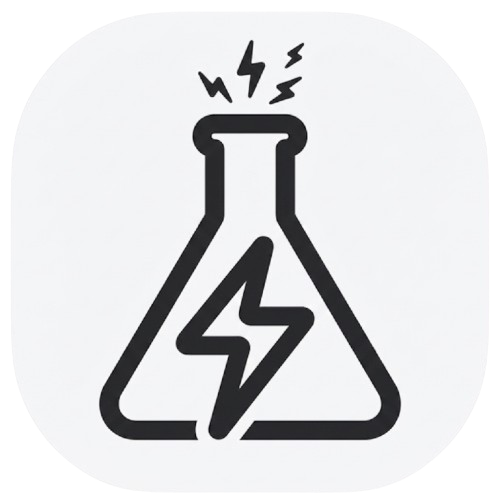

Más control
Atajos, controles multimedia del sistema, bandeja, reproducción precisa y herramientas para adaptar la app a tu forma de escuchar.

Desktop App, reimaginada por la comunidad.
YouTube Music Desktop App lleva la experiencia de YouTube Music a una aplicación de escritorio enfocada en control, personalización y comodidad. Reúne reproducción, controles multimedia, temas y extensiones en un espacio rápido, flexible y pensado para acompañar tu música sin distraerte.
Atajos, controles multimedia del sistema, bandeja, reproducción precisa y herramientas para adaptar la app a tu forma de escuchar.
Plugins, temas CSS del usuario, ajustes avanzados y una arquitectura extensible que permite que cada instalación tenga su propia identidad.
Una ventana dedicada, integración con el sistema operativo, notificaciones y funciones que hacen que la música se sienta parte natural de tu espacio de trabajo.
Este proyecto se construye sobre tecnologías web y Electron, con una comunidad y un ecosistema que siguen mejorando la experiencia.
Esta versión incluye un bloqueador integrado que ayuda a mantener la reproducción limpia y reduce solicitudes publicitarias y de seguimiento. Está activado por defecto en la sección de complementos y puede desactivarse o reactivarse desde el mismo interruptor cuando lo necesites.
Dirección, desarrollo y evolución de esta edición. Nexus Labs Inc. es el espacio creativo detrás de las mejoras, la identidad visual y las herramientas que hacen de esta versión una experiencia propia.